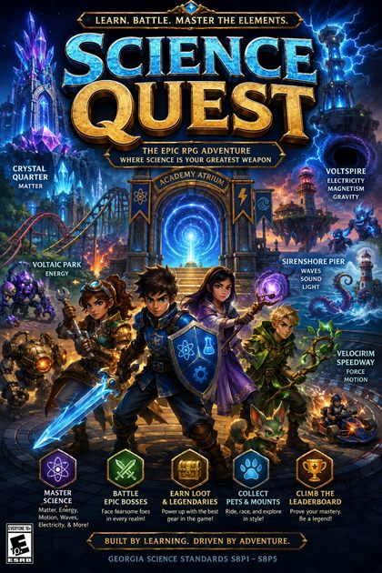

Georgia Standards of Excellence · SPS1–SPS10 · High School (Grades 9–12)
Student Sandbox
Open study mode — explore all ten units, play the games, drill vocabulary, and earn badges at your own pace.
Start studying →Educator
Pick the standards your unit covers, choose the resources to include, and build a shareable assignment for your class.
Build for my class →Students with an assignment link from their teacher: just open that link — it brings you straight to your checklist.
Teachers: print-ready PDFs (textbook chapters in English, Spanish & scaffolded editions, activities, and review sheets) live in the 🖨 printable library.
Also teach 8th grade? This is the High School hub — switch to the ⚛️ 8th-Grade Physical Science hub. One subscription covers both levels.
🏠 All classes · 🌍 Earth & Space Science (6th) · 🧬 Life Science (7th)
Educator Mode

⚔️ Science Quest — the science RPG
A role-playing adventure where students level up by mastering physical science. It's built on the 8th-grade standards, but it reinforces many of the same core ideas your high-schoolers review — atoms, the periodic table, forces, energy, waves, and electricity.
A separate one-time $19.99 purchase — not part of your hub subscription. Buy once, reuse with new students every year. Cherokee County teachers get it free.
🖨 Printable library — ready to copy
All five textbook chapters in English, Spanish, and scaffolded reading-support editions, plus chapter activity & lab sheets, unit review sheets, and the vocabulary list. Free to print for your classroom.
📘 New here? Grab the Teacher's Guide
A plain-English walkthrough of everything: building assignments, setting posttest attempts, the paperless gradebook, Warmup of the Day, printables and more. Downloads as a Word document you can keep or print.
🌅 Warmup of the Day
A bell-ringer in two clicks: pick a topic (or roll the dice), pick a question type, and project it. Questions never repeat until the whole pool has been used.
Build an assignment for your class.
Step 1: check every standard your current unit covers. The panel on the right shows exactly which study guides, games, videos, and PhET labs match — live.
Step 2 · Choose what to include
Counts update live from your Step 1 selection. Grayed-out types have no matching content yet.
🩺 Pretests are completion-only — they never count against the score. 🏁 Posttest question banks arrive in Phase 4; safe to include now, the student view will activate them automatically.
Step 3 · Name it & generate
The link freezes exactly what you picked — content added to the site later never changes an assignment you've already handed out.
🎉 Your assignment is ready
⚠️ Heads up: you're viewing this site as a local file, so this link only works on this computer. Host physical_science_hub.html on the web (GitHub Pages, your school server, etc.), open it from that web address, and generate from there — links will then work on any student device.
QR code — project it or print it
Paste-ready LMS instructions
📊 Gradebook — collect scores without paper
Students click "📋 Copy results code" on their checklist and paste the code into your LMS assignment. Paste everything they sent below (any order, any mess) and build the table — sorted by period, tamper-checked automatically.
🔍 Verify a student's score report
Enter the five values exactly as printed on the report. A valid code proves the name, score, and date weren't edited after printing.
Educator Mode
Teacher sign-in
Your teacher tools — assignment builder, gradebook, and printable library — live behind a free account. Sign in, or create one in a few seconds.
New here? Create an account →
👩🎓 Students never need an account. They just open the assignment link you send — this sign-in is only for teacher tools.
Educator Mode
Set a new password
Choose a new password for your teacher account, then you'll go straight to your tools.
Class Assignment
📋 Your assignment
High School Physical Science · Georgia Standards SPS1–SPS10
Everything you need to master physical science.
Study guides for every lesson, flashcards, practice quizzes that tell you why an answer is right or wrong, and arcade games that secretly make you smarter. Pick your element below to begin.
How to use this site
1 · Study
Open a unit and read the study guide. Each lesson card has the key idea, the formula if there is one, and the classic mistake to avoid.
2 · Drill
Flip through the flashcards until you can define every term without peeking. Shuffle them so you're not just memorizing the order.
3 · Test yourself
Take the practice quiz. You get instant feedback and an explanation on every single question — wrong answers teach you the most.
4 · Play
Hit the Arcade. Beat your high score in every unit minigame.
Your progress
Quiz best scores and game high scores will show up here as you play. (Progress saves on this device when the site is hosted on a regular web page.)
🏅 Badge case
Earn badges by taking quizzes, chasing streaks, and keeping up with your vocabulary review. Gray badges are still locked — go get them.
Game Arcade
Play your way to an A.
Every game here drills a skill straight off the unit test. Chase a streak, beat your high score, and you'll be studying without noticing.
All five units · 70+ terms
Vocabulary trainer
Flip cards to study, or switch to Quiz Me mode and prove it. Choose a unit or take on the whole deck.
Study Tools
Cheat-sheet corner (the legal kind).
📐 Formula sheet
| Quantity | Formula | Units | Unit |
|---|---|---|---|
| Density | D = m ÷ V | g/cm³ or g/mL | Matter |
| Kinetic energy | KE = ½ × m × v² | joules (J) | Energy |
| Gravitational PE | PE = m × g × h | joules (J) | Energy |
| Speed | s = d ÷ t | m/s | Motion |
| Acceleration | a = (vfinal − vinitial) ÷ t | m/s² | Motion |
| Newton's 2nd Law | F = m × a | newtons (N) | Motion |
| Wave speed | v = f × λ | m/s | Waves |
| Weight | W = m × g (g ≈ 9.8 m/s² on Earth) | newtons (N) | Gravity |
🧠 How to actually study (it's a science too)
Spaced practice beats cramming
Three 20-minute sessions across three days will beat one 60-minute cram every time. Your brain files memories while you sleep — give it more nights to work with.
Test yourself, don't just re-read
Re-reading feels productive but fools you. Closing the book and quizzing yourself — flashcards, practice quizzes, explaining out loud — is what actually moves facts into long-term memory.
Explain it to someone
If you can teach Newton's Third Law to a sibling (or your dog), you know it. If you get stuck mid-sentence, you just found exactly what to study next.
Do the wrong answers
When you miss a quiz question on this site, read the explanation, then come back tomorrow and try that quiz again. Missed questions are a map of what to study.
📏 Lab measurement refresher
Mass
Measured with a triple-beam balance or digital scale, in grams (g). Mass never changes with location.
Volume
Liquids: graduated cylinder, read at the bottom of the meniscus, in mL. Regular solids: L × W × H in cm³. Irregular solids: water displacement.
Temperature
Measured with a thermometer in °C for science class. Water freezes at 0 °C and boils at 100 °C at sea level.
Printable Library
High School printables are on the way.
Print-ready PDFs for High School Physical Science (SPS1–SPS10) — textbook readings, activities, labs and review sheets — are being prepared and will appear here as each unit is finished. They are included with your Physical Science subscription at no extra cost.
🚧 Check back soon — printables are added unit by unit.